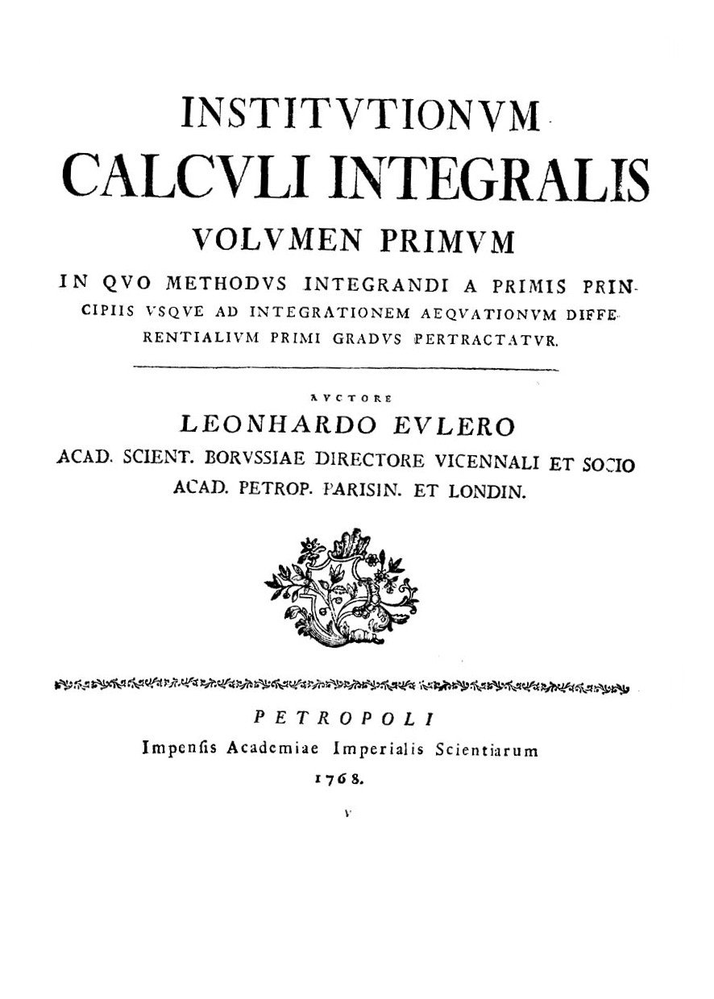
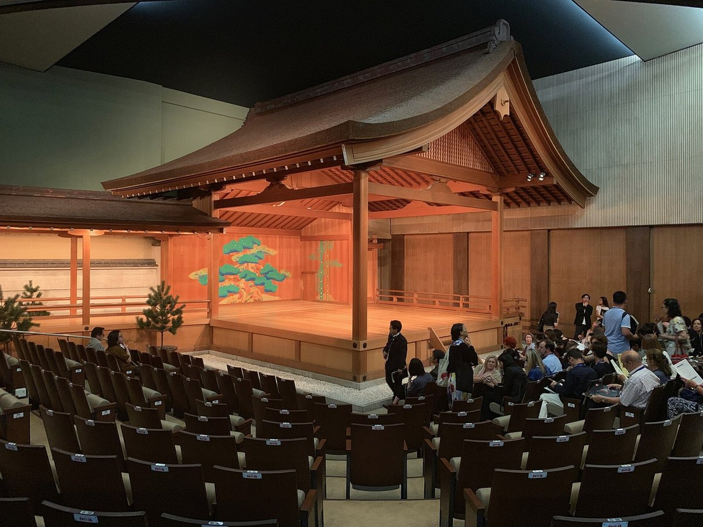
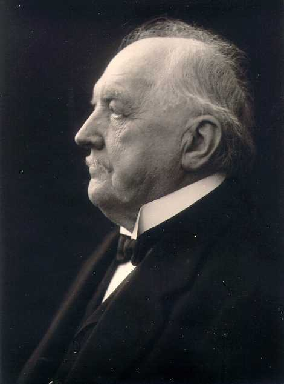

第49回
杉の巨木のあいだを、石の段が一段ずつ奥へのぼっていく。
Nekosuki（2013年、熊野古道・大門坂）／CC BY-SA 4.0／Wikimedia Commons（石段を中心に横長に切り出した）
微分方程式が式の形で解けないとき、解のグラフを「小さな一歩ずつ」たどって近似する。いちばん素朴なオイラー法、傾きを4回測って平均するルンゲ＝クッタ法、そして「刻み幅 $h$ を大きくしすぎると計算が爆発する」という安定性を、記号を1つずつ追いながら、数値で手を動かして確かめる。
第1回から続く約束どおり、新しい記号は緑色の枠（記号）で「①読み方 ②日本語での意味 ③省略していない書き方 ④どこで出会うか」を書く。この回の中心の省略は「ある点 $(x_n,y_n)$ での傾きを使って次の点に進む」という長い手順を、$y_{n+1}=y_n+hf(x_n,y_n)$ の1行にまとめたことなので、2.5 の省略の段階で S0 から S3 まで1段ずつ並べる。以後この箱にリンクして使う。
この回は、第28回の微分方程式・初期値問題・方向場を土台にして、第48回の打切り誤差・丸め誤差の考え方をそのまま使う回である。使うたびにリンクを張るので、忘れていても元の説明に戻れる。すべての計算は先に $y'=y$ という最も簡単な式で手を動かし、そのあと一般の $f(x,y)$ に進む。
図は計算した値で描いてある。本文の数値はすべて、Python で別に検算したものを載せた（教材には Python のコードは載せない）。
最初に、この回で新しく説明する記号と、前の回で説明済みの記号を分けて並べる。右の列の「→」で説明のある場所へ飛べる。
| 記号 | 読み方 | ざっくりした意味 | 説明 |
|---|---|---|---|
| $h$（刻み幅） | エイチ | 隣り合う点の間隔 | →1.2 |
| $x_n$（格子点） | エックス・エヌ | $x_0$ から $h$ ずつ進んだ $n$ 番目の点 | →1.2 |
| $y_n$（数値解） | ワイ・エヌ | $x_n$ での、真の解の値の近似値 | →1.3 |
| $y_{n+1}=y_n+hf(x_n,y_n)$ | オイラーほう | 傾きの方向へ $h$ 進んで次の値を作る | →2.2 |
| 局所誤差・大域誤差 | きょくしょ・たいいき | 1歩分の誤差／最終的な誤差 | →3.1 |
| $p$ 次の方法 | ピー・じ | 誤差が $h^p$ に比例する方法 | →3.4 |
| $k_1,k_2,k_3,k_4$ | ケー・いち〜よん | 1歩の中で測る傾き | →4.2 |
| ヒューン法 | ヒューンほう | 傾きを2回測る2次の方法 | →4.2 |
| ルンゲ＝クッタ法（RK4） | ルンゲ・クッタほう | 傾きを4回測る4次の方法 | →5.1 |
| $y'=\lambda y$（試験方程式） | ラムダ・ワイ | 安定性を調べる最も簡単な式 | →6.2 |
| $z=h\lambda$、$R(z)$ | ゼット、アール・ゼット | 刻み幅と $\lambda$ の積、1歩で何倍になるか | →6.2 |
| 絶対安定領域 | ぜったいあんていりょういき | $|R(z)|\lt1$ となる $z$ の集まり | →6.4 |
| 後退オイラー法 | こうたいオイラーほう | 次の点の傾きを使う陰的な方法 | →6.6 |
| 記号 | 意味 | 説明のある場所 |
|---|---|---|
| $y'=f(x,y)$、$y(x_0)=y_0$ | 微分方程式と初期値問題 | 第28回 微分方程式、初期値問題 |
| 方向場 | 各点に傾きを描いた図 | 第28回 方向場 |
| $y'=ky$ の解 $Ce^{kx}$ | 変数分離で解ける最も簡単な式 | 第28回 3.3 |
| $y'=-2xy$ の解 $e^{-x^2}$ | 右辺に $x$ も入る例 | 第28回 3.4 |
| 導関数 $f'(a)$ の定義 | 差分商の極限 | 第7回 |
| テイラー展開・剰余項 | 関数を多項式で近似 | 第9回、剰余項、$O(\cdot)$ |
| $o(\cdot)$、$O(\cdot)$ | ランダウの記号 | 第6回 |
| 定積分 | 面積 | 第10回 |
| 複素数・絶対値・複素平面 | $a+bi$、$|z|$ | 第34回、絶対値、複素平面 |
| 状態ベクトル | 高階の式を1階の連立にする | 第31回 |
| 安定（平衡点の） | 解が戻ってくる／離れる | 第32回 |
| 打切り誤差・丸め誤差 | 近似の誤差／有限桁の誤差 | 第48回、丸め誤差 |
第28回では、変数分離や積分因子で、解を式の形（$y=Ce^{kx}$ など）で書ける微分方程式を解いた。ところが、解を式で書けない微分方程式の方がずっと多い。たとえば $$ y'=x^2+y^2,\qquad y(0)=0 $$ は、右辺は2乗の和という単純な形だが、変数分離形にも1階線形にもならない。この式の解は、ベッセル関数という特殊な関数を使えば書けることが知られているが、$e^x$ や $\sin x$ の組合せでは書けない。機械や回路の運動方程式も、少し現実的にすると（空気抵抗が速度の2乗に比例する、ばねが線形でない、など）このように解けなくなる。
だが、解の式がなくても、解のグラフの形は方向場から読める（第28回 2.5）。方向場は「各点での傾き $f(x,y)$」を並べた図だった。その傾きの向きに沿って少しずつ進めば、解のグラフに近い折れ線が描けるはずだ。これを計算の手順にしたものが数値解法である。
図1.1 を見る。$y'=y$（解は $y=e^x$）の方向場の上に、実際の解を描いた。
コンピュータは、関数 $y(x)$ を丸ごと扱えない。そこで、$x$ の等間隔の点でだけ、解の値を求めることにする。最初の点を $x_0$（初期値問題で与えられた点）として、一歩の幅を決め、$x_0$ から順に進む。
①読み方：「エイチ」。「刻み幅」または「ステップ幅」と読む。
②日本語での意味：隣り合う2つの点の、$x$ 方向の間隔。小さいほど細かく進む。
③省略していない書き方：正の実数 $h$ を1つ決める。「$h$ は正の定数とする」の「定数」とは、計算の途中で変えないという意味である（変える方法もあるが、この回では扱わない）。
④どこで出会うか：数値微分・数値積分の刻み（第48回）、微分の定義の $h$（第7回。そこでは $h\to0$ とした）、有限差分法（第50回）。
①読み方：「エックス・エヌ」。$n=0,1,2,\dots$ を「添字」という（第4回）。
②日本語での意味：出発点 $x_0$ から、$h$ ずつ $n$ 回進んだ位置。
③省略していない書き方：$n=0,1,2,\dots$ のそれぞれについて $$ x_n:=x_0+n\,h. $$ つまり $x_1=x_0+h$、$x_2=x_0+2h$、$x_3=x_0+3h$、$\dots$。「隣の点へ行く」式は $x_{n+1}=x_n+h$ である（$x_0+(n+1)h=x_0+nh+h$ だから）。
④どこで出会うか：数値計算のすべて（格子、メッシュ）、数列（第4回）。
図1.2 を見る。点が一直線に並ぶ様子と、添字の意味を示した。
各格子点で、解の値の近似値を作りたい。真の解を $y(x)$ と書く（第28回の解）。$x=x_n$ での真の値は $y(x_n)$ である。これに対し、これから計算で作る近似値を $y_n$ と書く。
①読み方：「ワイ・エヌ」。「数値解」または「近似解」と呼ぶ。
②日本語での意味：$x_n$ での、真の解の値 $y(x_n)$ を近似して計算した値。
③省略していない書き方：「$y_n$ は $y(x_n)$ の近似値」を式で書くと $y_n\approx y(x_n)$（$\approx$ は「ほぼ等しい」）。ただし $y_0$ だけは近似ではなく、初期値問題で与えられた値そのもので $y_0=y(x_0)$ である。
④どこで出会うか：数値解析のすべて。第28回の $y(x_0)=y_0$ と同じ $y_0$ である。
$y(x_n)$（括弧つき）は真の値、$y_n$（添字つき）は計算で得た近似値で、一般に $y_n\ne y(x_n)$ である。この2つの差が、この回の主役である誤差だ。この2つを同じ記号で書いてしまうと誤差が見えなくなるので、この回では必ず区別して書く。
数値解法は、解の関数を丸ごと求めるのではなく、$x_0, x_1=x_0+h, x_2=x_0+2h,\dots$ の各点での近似値 $y_0,y_1,y_2,\dots$ を、前の値から順に作っていく手順である。
PHOTO 2｜現実

「積分学教程 第1巻 オイラー著 ペテルブルク 1768年」と印刷された扉である。
Leonhard Euler『Institutionum calculi integralis, Volumen primum』の扉（扉の年号は1768年）／Public domain／Wikimedia Commons（縮小した）
MITATE 2｜見立て

檜の舞台に松が描かれ、斜めに橋がかりが延びている。
Maarten Heerlien（2019年、京都観世会館の能舞台）／CC BY 2.0／Wikimedia Commons（縮小した）
いま点 $(x_n,y_n)$ にいるとする。次の点 $(x_{n+1},y_{n+1})$ の $y$ 座標を知りたい。微分方程式 $y'=f(x,y)$ が教えてくれるのは、この点での解の接線の傾き $f(x_n,y_n)$ だけである。（高校で習ったとおり、$y'$ は接線の傾きだった。）傾きが分かっていて、位置が分かっているなら、接線に沿って $h$ だけ進むのが最も素直な手である。
図2.1 を見る。点 $(x_n,y_n)$ から傾き $f(x_n,y_n)$ の直線に沿って $x$ 方向に $h$ 進む。着いた先が $(x_{n+1},y_{n+1})$ である。真の解の曲線はカーブしているので、接線からは少しずれる。
図2.1 の接線の上で、$x$ が $h$ 進むときの $y$ の増えは「傾き × 横の進み」$=f(x_n,y_n)\cdot h$ である（直線だから、傾きは「増え ÷ 進み」。両辺に進みをかけた）。これを足して次の値とする。
①読み方：「ワイ・エヌ・プラス・いち イコール ワイ・エヌ プラス エイチ エフ・エックス・エヌ・ワイ・エヌ」。「オイラー法」（Euler's method、前進オイラー法、陽的オイラー法）という。
②日本語での意味：「次の値 ＝ 今の値 ＋ （刻み幅 × 今の点での傾き）」。
③省略していない書き方：初期値問題 $y'=f(x,y)$、$y(x_0)=y_0$ と刻み幅 $h$ が与えられたとき、$n=0,1,2,\dots$ の順に $$ x_{n+1}=x_n+h,\qquad y_{n+1}=y_n+h\,f(x_n,y_n) $$ を繰り返す。右辺の $f(x_n,y_n)$ は、関数 $f$ の2つの入力に $x_n$ と $y_n$ を代入した値で、$n=0$ のときは $f(x_0,y_0)$、$n=1$ のときは $f(x_1,y_1)$ のように、一歩ごとに入力が変わる。
④どこで出会うか：数値解析の入門。Lebl の教科書の 1.7 節（Euler's method）。シミュレーションの時間発展の最も素朴な形。
同じ式 $y_{n+1}=y_n+hf(x_n,y_n)$ は、3つの見方から出てくる。どれも、すでに習った道具の言い換えである。
(a) 接線から（2.1）。接線の傾きが $f(x_n,y_n)$、進みが $h$。
(b) 微分の定義から。第7回の導関数の定義は、$h\to0$ の極限だった。$h$ が小さい正の定数のとき、極限を取るのをやめて近似とみなすと、 $$ \frac{y(x_n+h)-y(x_n)}{h}\approx y'(x_n). $$ $y'(x_n)=f(x_n,y(x_n))$ だから（微分方程式 $y'=f(x,y)$ に $x=x_n$ を入れた）、両辺に $h$ をかけて $y(x_n)$ を移項すると $$ y(x_n+h)\approx y(x_n)+h\,f(x_n,y(x_n)). $$ ここで真の値 $y(x_n)$ を近似値 $y_n$ に置き換えたものがオイラー法である。
(c) テイラー展開から。第9回のテイラー展開で、1次の項までで打ち切る： $$ y(x_n+h)=y(x_n)+h\,y'(x_n)+\frac{h^2}{2}y''(\xi_n)\quad(\xi_n\text{ は }x_n\text{ と }x_n+h\text{ の間のある点}). $$ 最後の項は剰余項で、これを捨てたものがオイラー法である。捨てた項が $h^2$ に比例することが、3章の誤差の見積りの出発点になる。
オイラー法は「その場の傾きが、これから $h$ のあいだも変わらない」と見なして進む方法で、実際は傾きが変わるぶんだけ誤差が出る。
解が分かっている最も簡単な式で、手を動かす。$y'=y$、$y(0)=1$ の真の解は $y=e^x$ で（第28回 3.3で $k=1$、$C=1$）、$y(1)=e=2.718281\ldots$ である。ここでは $f(x,y)=y$ なので $f(x_n,y_n)=y_n$ になり、オイラー法は $$ y_{n+1}=y_n+hy_n=(1+h)\,y_n $$ と書き直せる（$y_n$ でくくった）。毎回 $(1+h)$ 倍するだけだ。
刻み $h=1$（$x=1$ に1歩で着く）：$x_0=0$、$y_0=1$。
① $y_1=y_0+h\,f(x_0,y_0)=1+1\cdot1=2$。
刻み $h=\frac12$（2歩で $x=1$）：
① $y_1=1+\frac12\cdot1=1.5$（$x_1=0.5$）。
② $y_2=y_1+\frac12\,y_1=1.5+0.75=2.25$（$x_2=1$）。
刻み $h=\frac14$（4歩）：$y_1=1.25$、$y_2=1.25\times1.25=1.5625$、$y_3=1.5625\times1.25=1.953125$、$y_4=1.953125\times1.25=2.44140625$。
つまり $x=1$ での近似値は、$h=1$ で $2$、$h=\frac12$ で $2.25$、$h=\frac14$ で $2.4414$ と、真の値 $2.7183$ に向かって増えていく。式で書けば、$h=1/N$ のとき $y_N=(1+1/N)^N$ である（これは $N\to\infty$ で $e$ になる、あの極限だ。第6回の極限で習った）。
図2.2 を見る。3つの刻み幅の折れ線を、真の解 $e^x$ と重ねた。
表にまとめる（真の値 $e=2.71828\ldots$）：
| $h$ | 歩数 | $x=1$ での $y_N=(1+h)^{N}$ | 誤差 $e-y_N$ |
|---|---|---|---|
| $1$ | 1 | 2.00000 | 0.71828 |
| $1/2$ | 2 | 2.25000 | 0.46828 |
| $1/4$ | 4 | 2.44141 | 0.27688 |
| $1/8$ | 8 | 2.56578 | 0.15250 |
| $1/16$ | 16 | 2.63793 | 0.08035 |
| $1/32$ | 32 | 2.67699 | 0.04129 |
| $1/64$ | 64 | 2.69734 | 0.02094 |
誤差は $h$ を半分にするたびに、ほぼ半分になっている（$0.0804\to0.0413\to0.0209$）。これが3章の主題である。
図2.3 を見る。次の4段は、同じ手順を省略の度合いで並べたものだ。
S0（完全形）：「いま点 $(x_n,y_n)$ にいる。この点での解の接線の傾きは、微分方程式 $y'=f(x,y)$ の右辺 $f$ に $x=x_n$、$y=y_n$ を入れた値 $f(x_n,y_n)$ である。その傾きの直線に沿って、$x$ が $h$ だけ増えるとき、$y$ は $h\times f(x_n,y_n)$ だけ増える。したがって新しい点は $(x_n+h,\ y_n+h\,f(x_n,y_n))$ である。」
S1：$x_{n+1}=x_n+h$、$y_{n+1}=y_n+h\,f(x_n,y_n)$。省いたもの：「接線に沿って進む」という言葉による説明。誤解が起きない理由：式の各項が、2.1 の図の長さに1対1で対応している。
S2：$y_{n+1}=y_n+h\,f_n$（$f_n:=f(x_n,y_n)$）。省いたもの：$f$ の入力。誤解が起きない理由：$f_n$ は「$n$ 歩目の点での傾き」と定義してあり、$n$ が同じなら $x_n,y_n$ も同じ番号。
S3：$y_{n+1}=y_n+hk_1$（$k_1:=f(x_n,y_n)$）。省いたもの：「傾きを測るのは1回だけ」という事実。誤解が起きない理由：4.2 以降は傾きを複数回測るので、$k_1,k_2,\dots$ と番号をつけて区別するための書き方で、オイラー法のときは $k_1$ だけが現れる。
以後、$f_n$ や $k_1$ が出てきたら、この箱に戻って S2・S3 の定義を確かめる。
$f(x,y)=-2xy$ のとき、傾きは $x$ と $y$ の両方で決まる。真の解は $y=e^{-x^2}$（第28回 3.4）。$x=1$ での真の値は $e^{-1}=0.367879\ldots$ である。刻み $h=\frac12$、2歩で進む。
① $n=0$：$x_0=0$、$y_0=1$。傾きは $f(x_0,y_0)=-2\cdot0\cdot1=0$。$y_1=y_0+h\cdot0=1+0.5\cdot0=1$、$x_1=0.5$。
② $n=1$：$x_1=0.5$、$y_1=1$。傾きは $f(x_1,y_1)=-2\cdot0.5\cdot1=-1$。$y_2=y_1+h\cdot(-1)=1-0.5=0.5$、$x_2=1$。
よって $y_2=0.5$。真の値 $0.3679$ との誤差は約 $0.13$ で、かなり大きい。最初の一歩で傾き $0$ を使い、その傾きが続くと見なしたため（実際は $x=0.5$ に向かって下がり始める）、1歩目から誤差が出ている。同じ式を $h=\frac14$ で解くと $0.4102$ になる。
誤解1：「$y_{n+1}=y_n+hf(x_{n+1},y_{n+1})$ とも書ける」。傾きを測る位置が違う。オイラー法は今の点 $(x_n,y_n)$ の傾きを使う。次の点の傾きを使う方法は別の方法（後退オイラー法、6.6）で、$y_{n+1}$ が両辺に出るので式を解く手間が要る。
誤解2：「オイラー法で得た折れ線が解である」。折れ線は解の近似で、微分方程式を満たさない（折れ線は折れ目で微分できない）。$h$ を小さくするほど真の解に近づくが、等しくはならない。
誤解3：「$n$ は時刻」。$n$ は歩数の番号で、時刻（や $x$ の値）は $x_n=x_0+nh$ である。$h$ を変えると、同じ $n$ でも別の位置になる。
オイラー法は「$y_{n+1}=y_n+h\times$（いまの傾き）」を繰り返す。傾きが続くと見なす近似なので、曲がりのぶんだけ誤差が出る。$h$ を半分にすると、誤差はほぼ半分になる。
2.4 の表では、誤差を「最終点 $x=1$ での $e-y_N$」で測った。これは、一歩ごとに出る誤差が積み重なった結果である。一歩ごとの誤差と、積み重なった誤差を、別の名前で呼んで区別する。
①読み方：「きょくしょ（局所）ごさ」「たいいき（大域）ごさ」。局所は「その場の」、大域は「全体の」。
②日本語での意味：局所誤差は、「いま持っている値が正確だったとして、1歩だけ進んだときに出る誤差」。大域誤差は、出発点から $n$ 歩進んだあとの、実際の誤差 $y(x_n)-y_n$。
③省略していない書き方：局所誤差は、$y_n$ のかわりに真の値 $y(x_n)$ を使った1歩 $y(x_n)+h\,f(x_n,y(x_n))$ と、真の値 $y(x_{n+1})$ との差： $$ \tau_{n+1}:=y(x_{n+1})-\bigl[\,y(x_n)+h\,f(x_n,y(x_n))\,\bigr]. $$ 大域誤差は $E_n:=y(x_n)-y_n$。ここで $\tau$ は「タウ」と読むギリシャ文字、$E$ は誤差（error）の頭文字。
④どこで出会うか：数値解析。第48回の打切り誤差と同じ種類の誤差（微分を差分で置き換えた近似の誤差）である。
ほしいのは大域誤差（最終的な答えがどれだけ外れるか）だが、導くには局所誤差から出発する。
2.3(c) のテイラー展開を使う。1行に1操作で進める。
① 真の値 $y(x_n+h)=y(x_n)+h\,y'(x_n)+\dfrac{h^2}{2}y''(\xi_n)$（2.3(c)）。
② $y'(x_n)=f(x_n,y(x_n))$ を代入する（微分方程式）：$y(x_{n+1})=y(x_n)+h\,f(x_n,y(x_n))+\dfrac{h^2}{2}y''(\xi_n)$。
③ 3.1 の定義 $\tau_{n+1}=y(x_{n+1})-[y(x_n)+hf(x_n,y(x_n))]$ に②を入れる： $$ \tau_{n+1}=\frac{h^2}{2}\,y''(\xi_n). $$ ④ $y''$ が有界（上から押さえられる）ならば、$|\tau_{n+1}|\le Ch^2$ の形になる。第6回の記号で書けば 局所誤差は $O(h^2)$。
図3.1 を見る。点 $(x_n,y(x_n))$ から接線で $h$ 進んだ先と、真の解のあいだの縦のずれが $\tau_{n+1}$ である。ずれの大きさは、$h$ が2倍になると4倍になる（$h^2$ だから）。
確かめ（$y'=y$、$y(0)=1$、最初の1歩）：真の値は $e^h$、オイラー法は $1+h$。差は $e^h-(1+h)=\dfrac{h^2}{2}+\dfrac{h^3}{6}+\cdots$（$e^h$ のテイラー展開、第9回）。主要部は $\frac{h^2}{2}\,y''(0)$ で、$y''=y=1$ だから確かに③と合う。$h=0.5$ なら $e^{0.5}-1.5=0.1487\ldots$ で、主要部の $\frac{0.25}{2}=0.125$ に近い。
区間 $[x_0,\,x_0+L]$ を刻み $h$ で進むと、歩数は $N=L/h$ である。各歩で最大 $Ch^2$ の局所誤差が出るとして、それが全部足し合わさるとすれば、 $$ |E_N|\lesssim N\cdot Ch^2=\frac{L}{h}\cdot Ch^2=CL\,h. $$ （$\lesssim$ は「だいたい以下」。）つまり大域誤差は $h$ の1乗に比例（$O(h)$）。局所誤差が $h^2$ でも、歩数が $1/h$ に比例して増えるので、1つ次数が下がる。
上の計算は、「各歩の誤差が、その後の歩で大きくも小さくもならずに、そのまま足し合わさる」と仮定した。実際は、途中で出た誤差がその後の歩で増幅または減衰する。きちんと扱うには、$f$ が $y$ についてどれだけ変化するか（リプシッツ定数という上限）を使い、結果は $|E_N|\le\frac{C}{2K}(e^{KL}-1)\,h$ のような形になる。ここでは「$O(h)$」という結論だけを使い、その確かめを次の数値で行う。
数値で確かめる（$y'=y$）。2.4 の表から、誤差を $h$ で割る：$h=\frac1{16}$：$0.08035/0.0625=1.286$、$h=\frac1{32}$：$0.04129/0.03125=1.321$、$h=\frac1{64}$：$0.02094/0.015625=1.340$。比がほぼ一定（$h\to0$ で $1.359\ldots=e/2$ に近づく）だから、誤差 $\approx 1.36\,h$。
この $e/2$ は、次の1行ごとの計算で出る。$h=1/N$ のとき $y_N=(1+h)^{1/h}=\exp\!\bigl(\ln(1+h)/h\bigr)$（$a=e^{\ln a}$）。
① $\ln(1+h)=h-\dfrac{h^2}{2}+\dfrac{h^3}{3}-\cdots$（第9回）。
② $h$ で割る：$\dfrac{\ln(1+h)}{h}=1-\dfrac h2+\dfrac{h^2}{3}-\cdots$。
③ 指数にして、$e^{1+u}=e\cdot e^{u}$ と $e^u\approx1+u$（$u=-\frac h2+\cdots$ が小さい）：$y_N\approx e\bigl(1-\tfrac h2\bigr)$。
④ 誤差：$e-y_N\approx e\cdot\dfrac h2$。係数は $e/2=1.359$。✓ 数値の $1.34$ と合う。
①読み方：「ピー・じ（次）の方法」。オイラー法は「1次の方法」。
②日本語での意味：大域誤差が刻み幅の $p$ 乗に比例する方法。$h$ を半分にすると誤差が $(1/2)^p$ 倍になる。
③省略していない書き方：ある定数 $C$（$h$ に依らない）があって、$h$ が十分小さいとき、固定した点 $x$ での誤差が $|E(h)|\approx C\,h^{p}$ となること。「$\approx$」は $h\to0$ で比が $1$ に近づくという意味。
④どこで出会うか：数値微分・数値積分（第48回：中心差分は2次、シンプソンは4次）、偏微分方程式の差分法。
次数 $p$ を実験で読む方法を示す。$E=Ch^p$ の両辺の対数を取る：$\log E=p\log h+\log C$（積は和に、べき乗は係数に：対数の規則）。これは $\log h$ を横、$\log E$ を縦にとると傾き $p$ の直線だ。これを両対数グラフ（log-log）という。傾きが次数を直接教えてくれる。
2つの刻み $h$ と $h/2$ の誤差から、傾きは $$ p\approx\frac{\log E(h)-\log E(h/2)}{\log 2}=\log_2\frac{E(h)}{E(h/2)}. $$ オイラー法（2.4 の表）では $E(1/32)/E(1/64)=0.04129/0.02094=1.97$、$\log_2 1.97=0.98\approx1$。$p=1$ ✓。
図3.2 を見る。刻み $h$ を横、$x=1$ での誤差を縦にとった両対数グラフ。点が傾き1の直線に乗る。
図3.3 を見る。$x$ が進むにつれて誤差が積み重なっていく様子である（$y'=y$、$h=\frac12$ と $h=\frac14$）。
誤解1：「次数が高いほど、いつでも誤差が小さい」。次数は「$h$ を小さくしたときの減り方」を言う。$h$ が大きいうちは、定数 $C$ の大小で逆転しうる。また $f$ がなめらかでないと、高次の方法の利点が出ない。
誤解2：「局所誤差が $O(h^2)$ だから、大域誤差も $O(h^2)$」。3.3 のとおり、歩数が $1/h$ に比例するので 1 次下がる。「局所 $O(h^{p+1})$ なら大域 $O(h^p)$」と覚える。
誤解3：「精度を2桁上げるには、歩数を2倍」。1次の方法で誤差を $1/100$ にするには、$h$ を $1/100$ にする必要がある。歩数は100倍。
オイラー法の1歩の誤差は $h^2$ 程度（局所誤差）。$1/h$ 歩ぶん積み重なると $h$ 程度（大域誤差）。誤差が $h^p$ に比例する方法を「$p$ 次」と呼び、両対数グラフの傾きが $p$ になる。
オイラー法は、区間 $[x_n,x_{n+1}]$ の中で左端の傾きだけを使う。解が曲がっていると、区間の右端での傾きは左端と違う。左端と右端の傾きの平均を使えば、もっとよい近似になりそうだ。これは、定積分を台形で近似するのと同じ発想である（台形公式、第48回）。実際、$f$ が $x$ だけの関数なら $y'=f(x)$ の解は $y(x_{n+1})-y(x_n)=\int_{x_n}^{x_{n+1}}f(x)\,dx$ で、左端の値だけを使う方法は長方形、左右の平均を使う方法は台形である。
しかし右端の傾きを測るには、右端の点 $(x_{n+1},y_{n+1})$ が必要で、それは今から求めたいものだ。そこで、まずオイラー法で仮の右端を作り、そこでの傾きを測る、という二段構えにする。
①読み方：「ケー・いち」「ケー・に」……。
②日本語での意味：1歩の中で、別々の場所で測った傾き。番号は測る順番。
③省略していない書き方：$k_1:=f(x_n,y_n)$ は点 $(x_n,y_n)$ での傾き（2.5 の S3）。$k_2$ 以降は、$k_1$ などの傾きを使ってその場で作った仮の点での傾きで、定義は 4.2（$k_2$）、5.1（$k_2,k_3,k_4$）で1つずつ与える。なお番号 $1,2,3,4$ は添字で、$k$ の1乗・2乗ではない。
④どこで出会うか：ルンゲ＝クッタ法の全般、Lebl の教科書の 1.7 節。
①読み方：「ヒューンほう」（Heun's method）。「改良オイラー法」「2次のルンゲ＝クッタ法の1つ」とも。
②日本語での意味：オイラー法で仮の右端を作り、左端と仮の右端での傾きを平均して進む。
③省略していない書き方： $$ k_1=f(x_n,y_n),\qquad k_2=f\bigl(x_n+h,\ y_n+h\,k_1\bigr),\qquad y_{n+1}=y_n+h\cdot\frac{k_1+k_2}{2}. $$ $y_n+hk_1$ は「オイラー法で作った仮の $y_{n+1}$」、$k_2$ はその仮の点 $(x_{n+1},\,y_n+hk_1)$ での傾きである。
④どこで出会うか：2次のルンゲ＝クッタ法の代表。Lebl の教科書の 1.7 節の演習（improved Euler method）。
図4.1 を見る。左端の傾き $k_1$、仮の右端での傾き $k_2$、その平均の傾きで進んだ先が $y_{n+1}$ である。
$y'=y$、$y(0)=1$、$h=\frac12$（真の値 $y(1)=2.71828$）：
① $n=0$：$k_1=f(0,1)=1$。仮の右端 $y_0+hk_1=1+0.5=1.5$。$k_2=f(0.5,\,1.5)=1.5$。$y_1=1+0.5\cdot\dfrac{1+1.5}{2}=1+0.5\cdot1.25=1.625$。
② $n=1$：$k_1=1.625$。仮の右端 $1.625+0.5\cdot1.625=2.4375$、$k_2=2.4375$。$y_2=1.625+0.5\cdot\dfrac{1.625+2.4375}{2}=1.625+0.5\cdot2.03125=2.640625$。
誤差は $2.71828-2.64063=0.0777$。同じ $h$ のオイラー法（$2.25$、誤差 $0.468$）より6倍小さい。計算の量は、傾きを2回測る（$f$ の評価が2回）ぶんだけ増えた。
右辺に $x$ がある $y'=-2xy$、$h=\frac12$ では、$n=0$：$k_1=0$、仮の右端 $1+0=1$、$k_2=f(0.5,1)=-1$、$y_1=1+0.5\cdot\frac{0+(-1)}2=0.75$。$n=1$：$k_1=-2\cdot0.5\cdot0.75=-0.75$、仮の右端 $0.75+0.5\cdot(-0.75)=0.375$、$k_2=-2\cdot1\cdot0.375=-0.75$、$y_2=0.75+0.5\cdot\frac{-0.75-0.75}{2}=0.375$。真の値 $0.3679$ に対し誤差 $0.007$。オイラー法（$0.5$）の誤差 $0.13$ の約 $\frac1{18}$ である。
一般の $f$ で次数を示すのは手間なので、まず $f(x,y)=\lambda y$（$\lambda$ は定数）の場合で確かめる（この式は6章でも使う）。
① $k_1=\lambda y_n$。
② 仮の右端は $y_n+hk_1=y_n+h\lambda y_n=(1+h\lambda)\,y_n$。
③ $k_2=\lambda\cdot(1+h\lambda)\,y_n$。
④ $y_{n+1}=y_n+\dfrac h2\bigl(\lambda y_n+\lambda(1+h\lambda)y_n\bigr)=y_n\Bigl(1+\dfrac{h\lambda}{2}\bigl(2+h\lambda\bigr)\Bigr)$。
⑤ $z:=h\lambda$ とおいて展開：$y_{n+1}=\bigl(1+z+\tfrac{z^2}{2}\bigr)\,y_n$。
一方、真の解は $y(x_{n+1})=e^{z}\,y(x_n)$ で、$e^z=1+z+\frac{z^2}{2}+\frac{z^3}{6}+\cdots$。ヒューン法の係数は、$z^2$ の項までテイラー展開と一致し、差は $\frac{z^3}{6}$ の項から。1歩の誤差が $O(h^3)$、したがって大域誤差が $O(h^2)$、すなわち2次の方法である。オイラー法は $1+z$ で、$z^1$ までしか合わなかった。
数値で確かめる（$y'=y$、$x=1$）：誤差は $h=1:0.218$、$\frac12:0.0777$、$\frac14:0.0234$、$\frac18:0.00644$、$\frac1{16}:0.00169$、$\frac1{32}:0.000432$。$h$ を半分にするたびに、ほぼ4分の1（$0.00169\to0.000432$ は $3.9$ 分の1）になっている。
図4.2 を見る。同じ $h=\frac12$ で、オイラー法・ヒューン法・真の解を比べた。
傾きを「左端」と「オイラー法で作った仮の右端」の2か所で測って平均するのがヒューン法で、$z^2$ の項までテイラー展開と合う2次の方法。計算量（$f$ の評価）は1歩あたり2倍になる。
PHOTO 5｜現実

横顔を見せる年配の男性の肖像写真である（M. W. クッタ、1925年ごろ）。
作者不詳（1925年ごろ、マルティン・ヴィルヘルム・クッタの肖像）／Public domain／Wikimedia Commons
MITATE 5｜見立て
甲冑をつけた守護神の木像が、片腕を高く上げて立っている。
パナマ太平洋万国博覧会の日本帝国委員会（興福寺南円堂の多聞天像の写真）／Public domain／Wikimedia Commons（縮小した）
ヒューン法の考えを進めて、1歩の中で傾きを4回測る。区間の左端、真ん中（2回）、右端で測って、重み $1,2,2,1$ で平均する。
①読み方：「ルンゲ・クッタほう」（Runge–Kutta method）。特に4つの傾きを使うものを「古典的ルンゲ＝クッタ法」「4次のルンゲ＝クッタ法」「RK4」という。
②日本語での意味：区間の左端・真ん中・右端で傾きを4回測り、真ん中の2つを2倍の重みで平均して進む。
③省略していない書き方： $$\begin{aligned} k_1&=f(x_n,\ y_n),\\ k_2&=f\bigl(x_n+\tfrac h2,\ y_n+\tfrac h2\,k_1\bigr),\\ k_3&=f\bigl(x_n+\tfrac h2,\ y_n+\tfrac h2\,k_2\bigr),\\ k_4&=f\bigl(x_n+h,\ y_n+h\,k_3\bigr),\\ y_{n+1}&=y_n+\frac h6\,\bigl(k_1+2k_2+2k_3+k_4\bigr). \end{aligned}$$ $k_2$ は「$k_1$ の方向に半歩進んだ点」での傾き、$k_3$ は「$k_2$ の方向に半歩進んだ点」での傾き、$k_4$ は「$k_3$ の方向に1歩進んだ点」での傾きである。最後の式は、重み $1,2,2,1$ の合計が $6$ なので、$6$ で割ると「重みつき平均」になっている。
④どこで出会うか：数値計算ライブラリの標準的な方法（Python の SciPy の solve_ivp の既定は RK45 という、RK4 の仲間の方法）。Lebl の教科書の 1.7 節で紹介されている。
図5.1 を見る。4つの傾きを測る場所と、それぞれ何の傾きを使って作った点かの関係を示した。
$x_0=0$、$y_0=1$。$f(x,y)=y$ なので、傾きは「その点の $y$ の値」そのものである。
① $k_1=y_0=1$。
② $k_2$ を測る点：$y_0+\frac h2k_1=1+0.5\cdot1=1.5$。$k_2=1.5$。
③ $k_3$ を測る点：$y_0+\frac h2k_2=1+0.5\cdot1.5=1.75$。$k_3=1.75$。
④ $k_4$ を測る点：$y_0+hk_3=1+1.75=2.75$。$k_4=2.75$。
⑤ 重みつき和：$k_1+2k_2+2k_3+k_4=1+3+3.5+2.75=10.25$。
⑥ $y_1=1+\dfrac16\cdot10.25=1+1.708333=2.708333$。
真の値 $e=2.718282$ に対し、誤差は $0.00995$。オイラー法（同じ $h=1$ で $2$、誤差 $0.718$）の約 $\frac1{72}$、ヒューン法（$2.5$、誤差 $0.218$）の約 $\frac1{22}$ である。傾きを4回測っただけで、この差である。
この $2.708333$ には正体がある：$1+1+\frac12+\frac16+\frac1{24}=2.708333$。つまり $e^1$ のテイラー展開を4次の項まで取った値と一致している。5.5 で一般に示す。
右辺に $x$ がある例 $y'=-2xy$、$y(0)=1$、$h=\frac12$、1歩（$x_1=0.5$ での真の値 $e^{-0.25}=0.778801$）：
① $k_1=f(0,1)=0$。
② $k_2$：点 $(x_0+\frac h2,\ y_0+\frac h2k_1)=(0.25,\ 1+0.25\cdot0)=(0.25,1)$。$k_2=-2\cdot0.25\cdot1=-0.5$。
③ $k_3$：点 $(0.25,\ 1+0.25\cdot(-0.5))=(0.25,\ 0.875)$。$k_3=-2\cdot0.25\cdot0.875=-0.4375$。
④ $k_4$：点 $(0.5,\ 1+0.5\cdot(-0.4375))=(0.5,\ 0.78125)$。$k_4=-2\cdot0.5\cdot0.78125=-0.78125$。
⑤ $y_1=1+\dfrac{0.5}{6}\bigl(0+2(-0.5)+2(-0.4375)+(-0.78125)\bigr)=1+\dfrac{0.5}6\cdot(-2.65625)=0.778646$。
真の値 $0.778801$ との差は $1.6\times10^{-4}$。たった1歩（$h=0.5$ の大きな歩）で、小数第3位まで合っている。
$f$ が $y$ に依らず $x$ だけの関数 $f(x)$（つまり $y'=f(x)$、積分の問題）のとき、$k_2$ も $k_3$ も測る場所が $x_n+\frac h2$ で $y$ が関係ないから、$k_2=k_3=f(x_n+\frac h2)$ になる。また $k_1=f(x_n)$、$k_4=f(x_n+h)$ である。RK4 の最後の式は $$ y_{n+1}=y_n+\frac h6\Bigl(f(x_n)+4f\bigl(x_n+\tfrac h2\bigr)+f(x_n+h)\Bigr), $$ （$2k_2+2k_3=4f(x_n+\frac h2)$ とまとめた）となり、これはシンプソン公式（第48回）そのものである。区間の両端と中点を $1:4:1$ で重みづけて平均する。シンプソン公式は 4 次の誤差を持つ（第48回）ので、RK4 の「4次」の根拠の1つになっている。
図5.2 を見る。$y'=f(x)$ の場合に、4つの傾きがどこを測っているかを示した。
$f=\lambda y$、$z=h\lambda$ として、1行に1操作で追う。
① $k_1=\lambda y_n$。
② $k_2=\lambda\bigl(y_n+\tfrac h2k_1\bigr)=\lambda y_n\bigl(1+\tfrac z2\bigr)$（$\tfrac h2\lambda=\tfrac z2$ を使った）。
③ $k_3=\lambda\bigl(y_n+\tfrac h2k_2\bigr)=\lambda y_n\bigl(1+\tfrac z2(1+\tfrac z2)\bigr)=\lambda y_n\bigl(1+\tfrac z2+\tfrac{z^2}{4}\bigr)$。
④ $k_4=\lambda\bigl(y_n+hk_3\bigr)=\lambda y_n\bigl(1+z(1+\tfrac z2+\tfrac{z^2}{4})\bigr)=\lambda y_n\bigl(1+z+\tfrac{z^2}{2}+\tfrac{z^3}{4}\bigr)$。
⑤ 重みつき和：$k_1+2k_2+2k_3+k_4=\lambda y_n\bigl[1+(2+z)+(2+z+\tfrac{z^2}{2})+(1+z+\tfrac{z^2}{2}+\tfrac{z^3}{4})\bigr]=\lambda y_n\bigl[6+3z+z^2+\tfrac{z^3}{4}\bigr]$。
⑥ $y_{n+1}=y_n+\dfrac h6\cdot\lambda y_n\bigl[6+3z+z^2+\tfrac{z^3}{4}\bigr]=y_n\Bigl[1+\dfrac z6\bigl(6+3z+z^2+\tfrac{z^3}4\bigr)\Bigr]$。
⑦ 展開：$y_{n+1}=\Bigl(1+z+\dfrac{z^2}{2}+\dfrac{z^3}{6}+\dfrac{z^4}{24}\Bigr)\,y_n$。
これは $e^z=1+z+\frac{z^2}{2}+\frac{z^3}{6}+\frac{z^4}{24}+\frac{z^5}{120}+\cdots$ を $z^4$ までで打ち切ったものと同じである。差は $z^5$ の項から、1歩の誤差は $O(h^5)$、大域誤差は $O(h^4)$。これが「4次」の意味である（5.2 の $2.708333$ の正体）。
$y'=y$ の $x=1$ での誤差を、オイラー法・ヒューン法・RK4 で、$h=1,\frac12,\dots$ と半分にしながら比べる（真の値 $e$）：
| $h$ | オイラー法（1次） | ヒューン法（2次） | RK4（4次） |
|---|---|---|---|
| $1/2$ | 0.4683 | 0.07766 | 9.356e-4 |
| $1/4$ | 0.2769 | 0.02343 | 7.189e-5 |
| $1/8$ | 0.1525 | 0.006441 | 4.984e-6 |
| $1/16$ | 0.08035 | 0.001688 | 3.281e-7 |
| $1/32$ | 0.04129 | 0.0004322 | 2.105e-8 |
| $1/64$ | 0.02094 | 0.0001093 | 1.333e-9 |
$h$ を半分にすると、オイラー法はほぼ $\frac12$、ヒューン法はほぼ $\frac14$、RK4 はほぼ $\frac1{16}$ になる（RK4：$3.281\times10^{-7}\to2.105\times10^{-8}$ は $15.6$ 分の1）。両対数グラフにすると、傾きが 1、2、4 の3本の直線になる。
図5.3 を見る。さらに $h$ を非常に小さくすると、RK4 の誤差が下がり止まり、逆に上がり始める。これは 第48回の丸め誤差によるもので、歩数が増えるほど小さな丸めが積み重なるからである。
では「RK4 は4倍手間がかかるから割に合わない」か。図5.4 を見る。関数 $f$ を計算した回数を横軸にとった図である。同じ誤差に達するために必要な $f$ の評価回数は、RK4 が圧倒的に少ない。
機械の運動方程式のような2階の式 $y''=f(\cdot)$ は、第31回の状態ベクトルで1階の連立にできる。たとえば単振動 $y''=-y$ は、$v:=y'$ とおいて $$ \begin{pmatrix}y\\ v\end{pmatrix}'=\begin{pmatrix}v\\ -y\end{pmatrix}. $$ 右辺をベクトル値の関数 $\boldsymbol F(\boldsymbol u)$（$\boldsymbol u=(y,v)^{\mathsf T}$）と見れば、オイラー法・RK4 の式は、$y_n$ を $\boldsymbol u_n$、$k_i$ をベクトル $\boldsymbol k_i$ に置き換えるだけで同じ形で使える（足し算とスカラー倍だけだから）。
オイラー法を、この式に使うと：$\boldsymbol u_{n+1}=\boldsymbol u_n+h\boldsymbol F(\boldsymbol u_n)$ すなわち $y_{n+1}=y_n+hv_n$、$v_{n+1}=v_n-hy_n$。長さの2乗 $y^2+v^2$ は（真の解では一定だが） $$ y_{n+1}^2+v_{n+1}^2=(y_n+hv_n)^2+(v_n-hy_n)^2=(1+h^2)\,(y_n^2+v_n^2) $$ と、毎歩 $(1+h^2)$ 倍される（展開すると $2hy_nv_n$ と $-2hy_nv_n$ が打ち消し合い、$h^2(v_n^2+y_n^2)$ が残る）。円を描くべき解が、らせん状に外へ広がる。図5.5 を見る。RK4 ならほぼ円のままである。この理由は6章で分かる。
RK4 は、1歩の中で傾きを4回測って $1:2:2:1$ で平均する。$y'=\lambda y$ ではテイラー展開の $z^4$ の項まで一致し、誤差は $h^4$。傾きの測定回数（手間）は4倍でも、同じ精度に必要な歩数が大幅に少なくなる。
PHOTO 6｜現実
橋げたの一部が折れて垂れ下がり、水しぶきが上がっている。
Barney Elliot（1940年11月7日、タコマ・ナローズ橋の崩壊の映像の1コマ）／Public domain／Wikimedia Commons
MITATE 6｜見立て
梅と松の絵つけをした、卵形の白い人形が、赤い座布団の上に置かれている。
Daderot（2018年、石川県立伝統産業工芸館の起き上がり小法師）／CC0／Wikimedia Commons（縮小した）
3〜5章は「$h$ を小さくすると、誤差がどう減るか」だった。ところが、$h$ が小さくないとき、誤差が「小さい」とか「大きい」とかいう以前に、計算した値が爆発することがある。Lebl の教科書（1.7.6）は $y'=-5y$、$y(0)=1$ を $h=1$ のオイラー法で解かせて、これを見せている。真の解 $e^{-5x}$ は $0$ に減衰するのに、数値解は $1,-4,16,-64,256,\dots$ と符号を変えながら大きくなる。これは精度の話ではなく、安定性の話である。
第32回の安定は「微分方程式の解が、平衡点に戻る性質」だった。この回の安定性は「数値解法が、解を正しく減衰させる性質」で、方法と $h$ の組合せの性質である。微分方程式が安定でも、数値解法が不安定になることがある（6.1の例）。
安定性を調べるために、最も簡単で、しかも本質を含む式を選ぶ。
①読み方：「ワイ・ダッシュ イコール ラムダ ワイ」。「試験方程式」（test equation）または「ダールキストの試験方程式」という。
②日本語での意味：解が $y=y_0e^{\lambda x}$ になる最も簡単な式。$\lambda$ の実部が負なら解は減衰する。
③省略していない書き方：$\lambda$（ラムダ）は複素数の定数。実数 $\lambda\lt0$ なら減衰、虚数なら振動（$e^{i\omega x}$、第34回）、実部が負の複素数なら減衰しながら振動、を代表している。
④どこで出会うか：一般の線形連立 $\boldsymbol u'=A\boldsymbol u$ は、固有ベクトルで分解すると各成分が $y'=\lambda y$（$\lambda$ は固有値、第31回）になる。だから、各固有値 $\lambda$ について試験方程式で安定性が調べられる。
①読み方：$z$ は「ゼット」、$R(z)$ は「アール・ゼット」。「増幅率」「安定性関数」という。
②日本語での意味：$z=h\lambda$ は「1歩の間に解が $e^{\lambda x}$ の指数の分だけ進む量」（刻み幅と $\lambda$ の積）。$R(z)$ は1歩進むと数値解が何倍になるか。
③省略していない書き方：試験方程式に数値解法を使うと、いつも $y_{n+1}=R(z)\,y_n$ の形になる。したがって $y_n=R(z)^n\,y_0$。（$y_1=Ry_0$、$y_2=Ry_1=R^2y_0$、……と、順に代入）。オイラー法は $R(z)=1+z$、ヒューン法は $R(z)=1+z+\frac{z^2}{2}$、RK4 は $R(z)=1+z+\frac{z^2}{2}+\frac{z^3}{6}+\frac{z^4}{24}$（4.4、5.4、2.4）。
④どこで出会うか：数値解法の安定性解析、偏微分方程式の差分法（第50回）。
真の解は 1 歩で $e^{z}$ 倍になる。$R(z)$ は $e^z$ の多項式による近似で、オイラー法は1次まで、ヒューン法は2次まで、RK4 は4次まで合わせたものだった。
$\lambda=-10$、$y(0)=1$ で、真の解は $e^{-10x}$（急激に $0$ に減衰）。オイラー法の増幅率は $1+z=1+h\lambda=1-10h$。
| $h$ | $z=h\lambda$ | $R=1+z$ | 数値解の様子 |
|---|---|---|---|
| $0.25$ | $-2.5$ | $-1.5$ | $1,-1.5,2.25,-3.38,5.06,\dots$：符号を変えて増大 |
| $0.2$ | $-2$ | $-1$ | $1,-1,1,-1,\dots$：大きさが変わらず振動 |
| $0.15$ | $-1.5$ | $-0.5$ | $1,-0.5,0.25,\dots$：符号を変えながら減衰 |
| $0.1$ | $-1$ | $0$ | $1,0,0,\dots$：1歩で $0$ |
| $0.05$ | $-0.5$ | $0.5$ | $1,0.5,0.25,\dots$：単調に減衰（真の解らしい） |
$y_n=R^n y_0$ なので、$|R|\lt1$ なら $n\to\infty$ で $0$ に減衰、$|R|\gt1$ なら発散。オイラー法の条件 $|1+z|\lt1$ は、実数 $z$ では $-1\lt1+z\lt1$、すなわち $$ -2\lt z\lt0\quad\Longleftrightarrow\quad 0\lt h\lt\frac{2}{|\lambda|}\quad(\lambda\lt0). $$ $\lambda=-10$ なら $h\lt0.2$ でなければならない。精度を考えて $h$ を決める前に、まず**安定の条件で $h$ の上限が決まる**。$\lambda$ が大きい（速く減衰する）式ほど、$h$ を小さくしなければならない。図6.1 を見る。
図6.2 を見る。$z$ を横軸にして、$|R(z)|$ をグラフにした。$|R|=1$ の線の下側（$|R|\lt1$）が安定な範囲である。
$\lambda$ が複素数のとき（振動する系）は、$z=h\lambda$ も複素数になる。$|R(z)|$ は複素数の絶対値で測る。
①読み方：「ぜったいあんていりょういき」（region of absolute stability）。
②日本語での意味：試験方程式で、数値解が減衰する $z$ の集まり（複素平面の部分集合）。
③省略していない書き方： $$ \mathcal S:=\{\,z\in\mathbb C\ :\ |R(z)|\lt1\,\}. $$ 波かっこ $\{a:b\}$ は「$b$ を満たす $a$ の集まり」。$\mathbb C$ は複素数全体（複素平面）。
④どこで出会うか：数値解法の安定性解析。固有値 $\lambda$ に対して $h\lambda\in\mathcal S$ であるように $h$ を選ぶ。
各方法の領域を具体的に求める：
オイラー法：$|1+z|\lt1$ は、「$z$ から $-1$ までの距離が $1$ 未満」だから、$-1$ を中心とする半径 $1$ の円板（絶対値は距離）。実軸では $-2\lt z\lt0$。
ヒューン法：$|1+z+\frac{z^2}{2}|\lt1$。実軸では $-2\lt z\lt0$（$R(-2)=1-2+2=1$、境界。$R(z)=1+z+\frac{z^2}2=\frac12\bigl((z+1)^2+1\bigr)$ は実数 $z$ で $\ge\frac12$ なので、$R\lt1$ は $(z+1)^2\lt1$ と同値）。
RK4：実軸では $-2.785\lt z\lt0$（$R(z)=1$ となる $0$ でない $z$ が約 $-2.7853$ で、そこが端。$-2.785\lt z\lt0$ では $0\lt R\lt1$）。
図6.3 を見る。複素平面に3つの領域を描いた。高次の方法ほど領域が大きい（が、無限に広いわけではない）。
陽的な方法（オイラー法・ヒューン法・RK4）の $R(z)$ は多項式で、$|z|\to\infty$ で $|R(z)|\to\infty$ になる。だから領域は有限の大きさで、どんな陽的な方法も、$\lambda$ が大きく負の（速い減衰の）式では、$h$ を小さくしないと不安定になる。
5.6 の単振動 $y''=-y$ の固有値は $\lambda=\pm i$（純虚数、$i^2=-1$）。実部が $0$ なので、真の解は振幅が変わらない振動である。この場合、$z=h\lambda=\pm ih$ は虚軸の上にある。
オイラー法：$|1+ih|=\sqrt{1+h^2}\gt1$（$h\ne0$ のとき）。複素数 $a+bi$ の絶対値は $\sqrt{a^2+b^2}$（第34回）で、$a=1$、$b=h$。どんなに小さい $h$ でも $|R|\gt1$：虚軸の上の点は（原点を除いて）オイラー円板の外にある。これが 5.6 で見た「毎歩 $(1+h^2)$ 倍」で、円がらせんに広がる理由だ。（$|R|^2=1+h^2$ は、5.6 の $(1+h^2)$ と一致する。）
RK4：$z=ih$ を $R(z)$ に入れると、$R(ih)=\bigl(1-\frac{h^2}{2}+\frac{h^4}{24}\bigr)+i\bigl(h-\frac{h^3}{6}\bigr)$（$i^2=-1$、$i^3=-i$、$i^4=1$ を使った）。絶対値の2乗を展開して整理すると $$ |R(ih)|^2=1-\frac{h^6}{72}+\frac{h^8}{576}. $$ （途中で $h^2$ と $h^4$ の項が打ち消し合う。）$h\lt2\sqrt2\approx2.83$ のとき $\frac{h^8}{576}\lt\frac{h^6}{72}$ なので $|R|\lt1$：RK4 は虚軸の近くで安定で、$h$ が小さければ $|R|\approx1-\frac{h^6}{144}$ とほとんど $1$ のまま。だから円が円に近い形で保たれる。（わずかに $1$ 未満なので、振幅がごくゆっくり減る。これを「数値的な減衰」という。）
図6.4 を見る。$z=\pm0.5i$ と、$\lambda=-10$ の例（$h=0.25$、$z=-2.5$）を複素平面に重ねた。
$\lambda=-1000$ のように、速く減衰する成分がある式（硬い方程式、stiff という）では、陽的な方法は $h\lt2/1000=0.002$ を強いられる。減衰がとっくに終わった後も、ゆっくり動く成分を追うだけなのに、小さい $h$ が必要になる。そこで、領域が広い方法が欲しい。
①読み方：「こうたいオイラーほう」（backward Euler method）。
②日本語での意味：傾きを新しい点 $(x_{n+1},y_{n+1})$ で測る。
③省略していない書き方： $$ y_{n+1}=y_n+h\,f\bigl(x_{n+1},\,y_{n+1}\bigr). $$ 右辺に未知の $y_{n+1}$ が入っている（2.7 の誤解1と比べる）。各歩で、この式を $y_{n+1}$ について解く必要がある。試験方程式では $y_{n+1}=y_n+h\lambda y_{n+1}$ を $y_{n+1}$ について解く（$y_{n+1}$ の項を左辺に集めて：$(1-z)y_{n+1}=y_n$）と $$ y_{n+1}=\frac{1}{1-z}\,y_n,\qquad R(z)=\frac1{1-z}. $$ ④どこで出会うか：硬い微分方程式の解法（電気回路、化学反応）、熱方程式の差分法（第50回）。
$|R(z)|\lt1\iff|1-z|\gt1$。これは「$z$ と $1$ の距離が $1$ より大きい」、すなわち中心 $1$、半径 $1$ の円の外側。$\operatorname{Re}z\lt0$（左半平面）は全部この外側に含まれる。つまり、$\lambda$ の実部が負で真の解が減衰するなら、$h$ をどれだけ大きくしても数値解も減衰する。この性質を「A安定」という。ただし、$h$ を大きくしても正確とは限らない（安定は精度ではない）。図6.5 を見る。
誤解1：「安定ならば正確」。安定は「発散しない」だけで、「真の解に近い」とは別。後退オイラー法は大きな $h$ でも減衰するが、減衰の速さは $\frac1{1-z}$ で、真の $e^z$ とは別物。
誤解2：「$h$ を小さくすれば、必ず誤差が減る」。安定の範囲に入るまでは、$h$ を小さくしても発散のまま。入ったあとは、5.5 の図のように丸め誤差の床に達するまでは減る。
誤解3：「RK4 なら安定性を気にしなくてよい」。RK4 も領域は有限（実軸で $-2.785$ まで）。硬い式では $h$ の上限に引っかかる。
誤解4：「微分方程式が安定なら、数値解も安定」。6.1 の注意のとおり、別の概念。数値解の安定は $h\lambda\in\mathcal S$ で決まる。
試験方程式 $y'=\lambda y$ に数値解法を使うと $y_{n+1}=R(z)\,y_n$（$z=h\lambda$）になる。$|R(z)|\lt1$ なら減衰し、$|R(z)|\gt1$ なら発散する。オイラー法の安定領域は「$-1$ を中心とする半径1の円板」で、実軸では $-2\lt h\lambda\lt0$。精度の前に、まず安定の範囲に $h$ を入れる。
$y'=x+y$、$y(0)=1$、$h=0.1$ のオイラー法で、$y(0.3)$ の近似値 $y_3$ を求めよ。また真の解 $y=2e^x-x-1$ との誤差を求めよ。
解答
① $x_0=0$、$y_0=1$。傾き $f(x_0,y_0)=0+1=1$。$y_1=1+0.1\cdot1=1.1$、$x_1=0.1$。
② 傾き $f(x_1,y_1)=0.1+1.1=1.2$。$y_2=1.1+0.1\cdot1.2=1.22$、$x_2=0.2$。
③ 傾き $f(x_2,y_2)=0.2+1.22=1.42$。$y_3=1.22+0.1\cdot1.42=1.362$、$x_3=0.3$。
④ 真の値：$y(0.3)=2e^{0.3}-0.3-1=2\cdot1.349859-1.3=1.399718$。誤差は $1.399718-1.362=0.0377$。
（真の解が $y'=x+y$ を満たすことの確かめ：$y'=2e^x-1$、$x+y=x+2e^x-x-1=2e^x-1$ で一致。$y(0)=2-0-1=1$ も満たす。）
例題1の式で、$h=0.1$ の RK4 を1歩行い、$y_1$ を求めよ。真の値 $y(0.1)=2e^{0.1}-1.1$ と比べよ。
解答
① $k_1=f(0,1)=0+1=1$。
② $k_2=f(0.05,\ 1+0.05\cdot1)=f(0.05,\,1.05)=0.05+1.05=1.1$。
③ $k_3=f(0.05,\ 1+0.05\cdot1.1)=f(0.05,\,1.055)=0.05+1.055=1.105$。
④ $k_4=f(0.1,\ 1+0.1\cdot1.105)=f(0.1,\,1.1105)=0.1+1.1105=1.2105$。
⑤ $y_1=1+\dfrac{0.1}{6}\bigl(1+2\cdot1.1+2\cdot1.105+1.2105\bigr)=1+\dfrac{0.1}{6}\cdot6.6205=1.1103417$。
⑥ 真の値：$2e^{0.1}-1.1=2\cdot1.1051709-1.1=1.1103418$。差は約 $10^{-7}$（オイラー法の1歩 $1.1$ は差 $0.0103$）。
$y'=-20y$ をオイラー法とRK4で解くとき、数値解が減衰するための $h$ の範囲を求めよ。
解答
① $\lambda=-20$、$z=h\lambda=-20h$。
② オイラー法：$|1+z|\lt1$ ⇔ $-2\lt z\lt0$（6.3）。$z=-20h$ を入れて $-2\lt-20h\lt0$、各辺を $-20$ で割る（不等号が逆向き）：$0\lt h\lt0.1$。
③ RK4：実軸の領域は $-2.785\lt z\lt0$（6.4）。$-2.785\lt-20h$ より $h\lt0.139$。
④ 確かめ：$h=0.12$ だと、オイラー法は $R=1-2.4=-1.4$（発散）、RK4 は $z=-2.4$ で $R=1-2.4+2.88-2.304+1.3824=0.5584$（減衰）。
ある方法で $x=1$ の誤差が、$h=\frac18$ のとき $4.984\times10^{-6}$、$h=\frac1{16}$ のとき $3.281\times10^{-7}$ だった。次数 $p$ を求めよ。
解答
① 誤差の比：$\dfrac{4.984\times10^{-6}}{3.281\times10^{-7}}=15.19$。
② $p\approx\log_2 15.19$。$2^4=16$ だから $p\approx3.93\approx4$（3.4 の式）。
③ 4次の方法（RK4）。$h$ を半分にすると誤差は約 $\frac1{16}$。
A は確認、B は標準、C は発展。答えは「解答」を開いて確かめる。自作の問題の解答は、教科書の公式解答とは照合していない（本人が確認した計算のみ）。
問1 $y'=2y$、$y(0)=1$、$h=0.5$ のオイラー法で $y_2$ を求めよ。
$y_1=1+0.5\cdot2\cdot1=2$、$y_2=2+0.5\cdot2\cdot2=4$（$x_2=1$）。真の値 $e^2=7.389$ に対し誤差が大きい（$h$ が大きいため）。
問2 $y'=y$、$y(0)=1$、$h=0.2$ のオイラー法で $y(1)$ を求めよ（Lebl 1.7.5 と同じ設定。計算は自作）。
2.4 により $y_{n+1}=(1+h)y_n=1.2\,y_n$。5歩で $1.2^5=2.48832$。真の値 $e=2.71828$ との誤差 $0.230$。
問3 $x_0=1$、$h=0.2$ のとき $x_3$ は何か。
$x_n=x_0+nh$ より $x_3=1+3\cdot0.2=1.6$。
問4 $\lambda=-4$、$h=0.25$ のとき $z=h\lambda$ と、オイラー法の増幅率 $R(z)=1+z$ を求めよ。
$z=0.25\cdot(-4)=-1$、$R=1+(-1)=0$。つまり1歩で $y_1=0$ になる（真の値 $e^{-1}y_0=0.368y_0$ とは違うが、減衰はしている）。
問5 $y'=x+y$、$y(0)=1$、$h=0.1$ のヒューン法で1歩進め、$y_1$ を求めよ。
$k_1=f(0,1)=1$。仮の右端 $1+0.1\cdot1=1.1$、$k_2=f(0.1,1.1)=1.2$。$y_1=1+0.1\cdot\frac{1+1.2}{2}=1+0.11=1.11$。真の値 $1.110342$ に対し、誤差 $3.4\times10^{-4}$（オイラー法の誤差 $0.0103$ の約 $\frac1{30}$）。
問6 $y'=-y$ をオイラー法で解く。$y_n=(1-h)^ny_0$ を示し、$0\lt h\lt1$、$1\lt h\lt2$、$h\gt2$ のそれぞれで数値解の様子を述べよ。
$y_{n+1}=y_n+h(-y_n)=(1-h)y_n$ を繰り返すと $y_n=(1-h)^ny_0$。$0\lt h\lt1$：$0\lt1-h\lt1$、単調に減衰。$1\lt h\lt2$：$-1\lt1-h\lt0$、符号を変えながら減衰。$h=2$：$1-h=-1$、大きさ一定の振動。$h\gt2$：$1-h\lt-1$、符号を変えながら発散。
問7 中点法 $k_1=f(x_n,y_n)$、$y_{n+1}=y_n+h\,f\bigl(x_n+\frac h2,\,y_n+\frac h2k_1\bigr)$ を $y'=\lambda y$ に使うと、$R(z)=1+z+\frac{z^2}{2}$ となることを示せ。
$k_1=\lambda y_n$。$y_n+\frac h2k_1=y_n(1+\frac z2)$。これでの傾きは $\lambda y_n(1+\frac z2)$。$y_{n+1}=y_n+h\lambda y_n(1+\frac z2)=y_n\bigl(1+z+\frac{z^2}{2}\bigr)$。ヒューン法と同じ $R(z)$。
問8 オイラー法で $x=1$ の誤差が $h=0.1$ で $0.04$ だった。$h=0.01$ ではおよそいくつか。歩数は何倍か。
1次なので誤差は $h$ に比例し、$0.04\times\frac{0.01}{0.1}=0.004$。歩数は $10$ 倍（$h$ が $\frac1{10}$）。
問9（Lebl, Notes on Diffy Qs, Exercise 1.7.6 に基づく。出典と問題番号のみ記し、解説は自作）$y'=-5y$、$y(0)=1$ をオイラー法で解く。$h=1$ から始めて $h$ を半分にしていくと、数値解が減衰し始めるのはいつか。
$R=1-5h$。$h=1$：$R=-4$、$1,-4,16,-64,256$（発散）。$h=0.5$：$R=-1.5$（発散）。$h=0.25$：$R=-0.25$、符号を変えて減衰。条件 $|1-5h|\lt1$ ⇔ $0\lt h\lt0.4$ なので、$h=0.5$ まではだめで、$h=0.25$ から減衰が始まる。
問10 RK4 の増幅率 $R(z)=1+z+\frac{z^2}2+\frac{z^3}6+\frac{z^4}{24}$ について、$z=-2.7853$ で $R\approx1$（安定領域の端）となること、$z=-3$ では $|R|\gt1$ となることを計算で確かめよ。
$z=-2.7853$：$z^2=7.7580$、$z^3=-21.608$、$z^4=60.187$。$R=1-2.7853+3.8790-3.6013+2.5078=1.0002\approx1$。$z=-3$：$R=1-3+4.5-4.5+3.375=1.375\gt1$ で不安定。（$z=-2$ では $R=1/3\lt1$ で安定。）
問11 後退オイラー法を $y'=-10y$、$y(0)=1$、$h=1$ に使い、$y_1,y_2$ を求めよ。オイラー法の結果と比べよ。
$R=\frac{1}{1-z}$、$z=-10$ なので $R=\frac1{11}$。$y_1=0.0909$、$y_2=0.00826$。オイラー法は $R=1-10=-9$、$y_1=-9$、$y_2=81$ で発散。後退オイラー法は、大きな $h$ でも減衰するが、真の値 $e^{-10}=4.5\times10^{-5}$ と比べると正確ではない。


.jpg){kind=link}

_(406).jpg){kind=link}